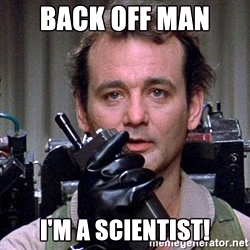

home | contact
cv | lab | news
Tim Menzies
prof.se.ai.ncsu
ex-nurse, taxi-driver, journalist, rocketman (it made sense at the time)
About us
Contacts


Hello Wold
- dsadsas asdas
- asdas aa
site=My great webpage
Aug20: What SE topics matter most? 9000+ SE conference papers clustered. Submitted to ICSE'16 more...
Aug16: Breakthrough result: better 'evolution', with no mutataion. Submitted to ICSE'16 more...
Aug15: Breakthrough result: better 'evolution', with no mutataion. Submitted to ICSE'16 more...